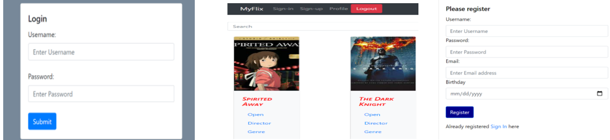

myFlix is client-side based on its server-side code (REST API and database). A web app developed using the MERN stack provides users with information about movies, directors, and genres. Users can create an account, update their data, and create a list of favorite movies.
myFlix was a personal project built as a part of my web development course at CareerFoundry to demonstrate my mastery of full-stack JavaScript development. It uses React library to create the client-side of an application and the interface to make requests to and receive responses from the REST API endpoints developed on the server-side.
The project aimed to have an ambitious full-stack project I could add to my professional portfolio. I wanted to solve the problem of building the complete server-side and the client-side application from scratch.
It took me a considerable amount of time to complete this achievement. I had to familiarize myself with the component-based architecture, set React Development environment, Component lifecycle methods, configure react routes, and implement flux design patterns using the Redux library.
The API for the "movies" web application interacts with a database that stores data about different movies. The web application provides information about other movies, directors, and genres. Users can sign up, update their user account information, and create and delete a list of their favorite movies. API includes user authentication, authorization code, and data validation at relevant endpoints
| • AddFavoriteMovie - POST | • DeleteFavoriteMovie - DELETE |
| • DELETEUserAccount - DELETE | • GETAllMovies - GET |
| • GETAllUsers - GET | • GETOneDirector - GET |
| • GETOneGenre - GET | • GETOneMovie - GET |
| • UpdateUser - PUT |
I built the client-side for an application called myFlix based on its existing server-side code (REST API and database). It is a single-page, responsive application developed with React and React-Redux. It has different views like the main view (which shows a list of all movies), single movie view (where users can view details about the director and genre of the film), login view, registration view, and profile view(where users can update their user data and see list of favorite movies)
This was a challenging project for me. I had to understand React library to build the user interfaces, component-based architecture, configuring parcel to build the application, and create different components for different front-end views. The most challenging part of the application was creating client-side App routing. There were conflicts in the versions, and I had to refer to many external resources to implement the functionality. Thanks to feedback from other developers in the Slack channel, tutors, and mentors, I overcame the achievement.